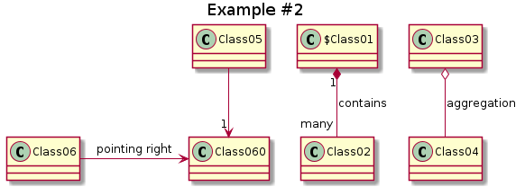

GIT from the inside
or: How GIT sees the world
Jens Neuhalfen
View Online — Speakers Notes — Source Code


 LICENSE
LICENSE- Press s for speakers view
- Press o for overview
Table of Contents
Why SCM?
- SCM System
- *S*ource *C*code *M*anagement System
- Tracks changes
- Who, When, What and Why
- Time Machine
- Go back to any point in the past
- Collaborative
- Allows multiple people to collaborate on a source set
What is a hash?
A hash \(h(x)\) is a fixed length value derived from some data \(x\).
(*) It is very unlikely that different values hashes to the same hash. If this happens it is called a hash collision.
How likely is a hash collision?
Collisions depend on the number of changed files & commits.
Rule of thumb: Don't create more than \(10^{10}\) (ten US-billion) files with \(10^{10}\) commits per repository
Git basics
Mental model
Think of git as a filesystem with extra dimensions , or, if you like math, a directed acyclic graph.
The "git file system"
The following pages show how git implements the "file system" used for its magic. Files, directories and commits are handled all in the same way!
What is content addressed storage?
A content addressed storage is a very simple database
| PRO | CON |
|---|---|
| - simple | - no query method besides hash |
| - data not duplicated |
- put
- \(put(data) \to hash_{data}\)
- get
- \(get(hash_{data}) \to data\)
sha1(data) == hash
Empty Object Storage

This is the empty object store. It is located in the .git/ directory
File Content


We can store the content of README.txt but not the file name. Git calls this a blob.
Directories


A directory (tree in git-speak) is a special file that contains file names and links to the content via the hash.
E.g. B 0xafde README.txt is the README.
The First Commit


A commit (circle) points to a tree (the files) and has e.g. a commit message.
The Second Commit


- Most of the time a commit points to a parent commit.
- See how someone edited
README.txt(B 0xdead README.txt)?
What do changes mean?
Changing README.txt also changes the tree! The hash changed from 0x4711 to 0x0815 .
This is very important : Changing a file will change its hash. This will change the content of the parent tree. This will change the hash of the parent tree. This will change all the tree hashes up to the top.
The first branch
Starting out from the filesystem, let's have a look at how a branch can be constructed.
In order to to so, we need to answer a very important question:
How does git know which commit is the current commit?
How git finds the parent commit
Let's recapitulate:
Githeavily relies on content addressed storage- Content addressed storage is like chaotic storage
- Very efficient
- no query method besides
get(hash) - Needs external paperwork
In order to know the current commit, we need to look at the paperwork.
Initialize repository
Create a fresh repository:
mkdir -p "${repo}" && cd "${repo}"
git init
Initialized empty Git repository in /tmp/git-from-the-inside/branches/.git/
and commit something:
echo "Please read me" >README.txt
git add README.txt
git commit -m"1st commit"
[master (root-commit) eccc1a6] 1st commit
1 file changed, 1 insertion(+)
create mode 100644 README.txt
The value eccc1a6 in the first line of the output is the ID of the new commit.
External storage in .git/
Question: How does git know which commit is the current commit?
Answer: The .git/ directory provides additional context:
tree -L 1 -hF "${repo}/.git"
/tmp/git-from-the-inside/branches/.git
|-- [ 11] COMMIT_EDITMSG
|-- [ 23] HEAD
|-- [4.0K] branches/
|-- [ 143] config
|-- [ 73] description
|-- [4.0K] hooks/
|-- [ 145] index
|-- [4.0K] info/
|-- [4.0K] logs/
|-- [4.0K] objects/
`-- [4.0K] refs/
6 directories, 5 files
.git/HEAD- Tellsgitwhat the current commit is.git/refs/..and.git/branches/..- later…
./git/HEAD
Let's see what .git/HEAD contains.
cat .git/HEAD
ref: refs/heads/master
What does git make of ref: refs/heads/master?
git rev-parse refs/heads/master
eccc1a680782796279a062710f2e750a40847b18
What is the last commit?
git log
commit eccc1a680782796279a062710f2e750a40847b18
Author: Alice <alice@neuhalfen.name>
Date: Sun Jan 24 22:44:23 2021 +0000
1st commit
./git/HEAD part II
Question: How does git know which commit is the current commit?
Answer: HEAD points to the current branch. The branch resolves to the current commit.
Commit
Working on one branch
git commit -m'2nd commit' --allow-empty
[master ebab154] 2nd commit
Multiple Branches: Theory
Multiple Branches: practical I/II
git checkout -b devel HEAD^1
git commit -m'#1 on devel' --allow-empty
git commit -m'#2 on devel' --allow-empty
git log --oneline
[devel 24fa4e6] #1 on devel
[devel bf466f1] #2 on devel
bf466f1 #2 on devel
24fa4e6 #1 on devel
ebab154 2nd commit
eccc1a6 1st commit
Multiple Branches: practical II/II
git log devel --oneline --decorate
bf466f1 (HEAD -> devel) #2 on devel
24fa4e6 #1 on devel
ebab154 2nd commit
eccc1a6 1st commit
Merge
A merge commit has more than one parent and includes the commits of multiple branches.
Merge: theory
Merge: how it works
git checkout master
# GIT_MERGE_AUTOEDIT=no uses the automatically created commit message
GIT_MERGE_AUTOEDIT=no git merge devel
Already up to date!
Merge made by the 'recursive' strategy.
Merge: all commits belong to the graph
git log --oneline --decorate
eb56576 (HEAD -> master) Merge branch 'devel'
76e33f0 3rd commit - only master
bf466f1 (devel) #2 on devel
ebab154 2nd commit
24fa4e6 #1 on devel
eccc1a6 1st commit
Merge: a branch can be merged more than once
git checkout devel
git commit --allow-empty -m"Hotfix on devel"
git checkout master
GIT_MERGE_AUTOEDIT=no git merge devel
[devel f0b0358] Hotfix on devel
Already up to date!
Merge made by the 'recursive' strategy.
Merge Summary
- PRO
- Explicit, merge stays a part of the graph
- CON
- Graph gets complex
- Not optimal for work in progress
Rebase
Rebasing "transplants" commits and can be a better way to merge.
Rebase: theory
Rebase: how it works
git checkout devel
git rebase master
First, rewinding head to replay your work on top of it...
Applying: devel: 1st commit
Applying: devel: 2nd commit
Rebase: All rebased commits are changed
git log devel --oneline --decorate
08c2891 (HEAD -> devel) devel: 2nd commit
744aeb5 devel: 1st commit
987bfb1 (master) master: 3rd commit
87256ea master: 2nd commit
a504c08 master: 1st commit
Rebase: Merging gets easy
git checkout master
GIT_MERGE_AUTOEDIT=no git merge devel
Updating 987bfb1..08c2891
Fast-forward
change_devel | 2 ++
1 file changed, 2 insertions(+)
create mode 100644 change_devel
Rebase Summary
- PRO
- Simplified graph
- Suitable for work in progress
- CON
- Merge no longer explicit
- CAVE
push -f
Remote
Examples
The following examples can be skipped via a :noexport tag on this headline
Notes and timing
- Press
Sto see notes (see the reveal.js documentation). - Set
#+REVEAL_EXTRA_OPTIONS: totalTime:2700to set the total time for the slides to 45min - Set
:reveal_extra_attr: data-timing="120"to set a timer for this slide (shown in the speakers notes) to 2min - Reveal automatically calculates the duration of the slides without
data-timing
| Duration in minutes | Value for data-timing / totalTime |
|---|---|
| 1 | 60 |
| 5 | 300 |
| 10 | 600 |
| 30 | 1800 |
| 45 | 2700 |
| 60 | 3600 |
| 90 | 5400 |
CSS
Some CSS classes have been defined
Two Coloumns
.two-columns
Two Coloumns, two rows
.two-columns .two-rows
Two Coloumns, two rows - row 1 spans two cols
.two-columns .two-rows
Two Coloumns, two rows + notes
.two-columns .two-rows-notes
Two Coloumns, two rows + notes (long notes)
.two-columns .two-rows-notes
The notes
- can span multiple
- lines and will resize
- automatically
Two Coloumns, two rows + notes (placed via CSS class)
.two-columns .two-rows-notes but placed via CSS class
The notes
- can span multiple
- lines and will resize
- automatically
Top Right
Bottom Right
Bottom Left
Top Left
Included Images
Generated Images
Images should be generated into org-gen/ (see doc/BUILD.org):
Add Elements to Lists
- I will grow. (6)
- I will shrink. (5)
- I rolled in. (4)
- I will fade out. (3)
- I don't fragment. (2)
- I appear (1)
Combined

This is how the source code looks like:
@startuml
title Example #2
' https://plantuml.com/class-diagram
$Class01 "1" *-- "many" Class02 : contains
Class03 o-- Class04 : aggregation
Class05 --> "1" Class060
Class06 -> Class060 : pointing right
@enduml
See the graph on the right side?
The source spans two columns to give us enough space.
Example Git
echo "$(date +%s%N) 2nd in $repo" >> /tmp/log
cd "${repo}" || exit 1
git commit -m'2nd commit' --allow-empty
[master 6f0d3b4] 2nd commit
Math with MathJax
Math sould be fenced by $:
${n! \over k!(n-k)!} = {n \choose k}$
\({n! \over k!(n-k)!} = {n \choose k}\)